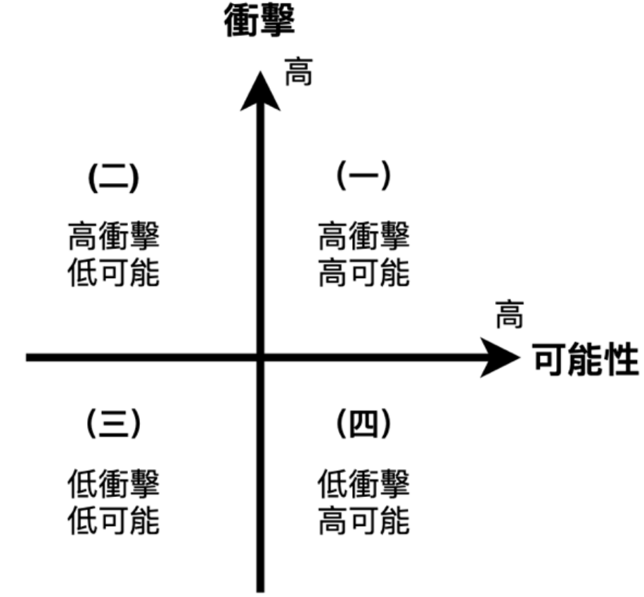
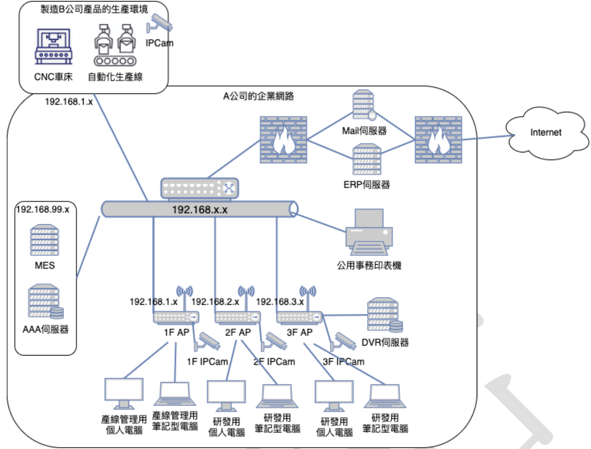
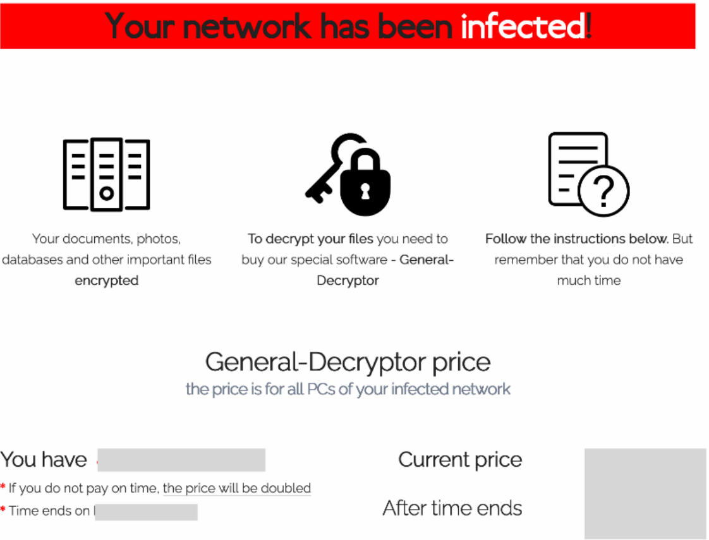

下列何者最能說明系統角色權限存取控制 (Role-Based Access Control, RBAC)?
B
採用集中存取控制方法, 系統管理者可不需要依使用者部門來進行存取控制設定
C
可依據系統使用者的工作任務, 設定與變更人員操作存取權限, 也可於使用人員任務異動時撤銷不需要的授權功能
D
主要作為執行企業資訊系統的安全策略、資安標準和作業管理指南
RBAC 的核心概念是將權限 (Permissions) 分配給角色 (Roles)，然後將使用者 (Users) 指派給這些角色。使用者透過其被賦予的角色來獲得執行特定工作任務所需的權限。
(A) 描述的是自主存取控制 (DAC) 的特性，資源擁有者或管理者決定存取權限。
(B) RBAC 是集中管理沒錯，但權限是基於角色（通常與工作職責或部門相關），而非完全不需考慮部門。
(C) 這最能體現 RBAC 的精神：權限是根據工作任務（角色）來設定的，當人員的任務（角色）發生變動時，只需調整其角色歸屬，就能方便地授予或撤銷相關權限。
(D) RBAC 是實現安全策略中存取控制要求的一種機制，而非策略或指南本身。
因此，最能說明 RBAC 的是 (C)。
公司指派專人負責去回收櫃檯的新客戶個人資料表, 裝箱並貼上封條後, 再由該專人將這些資料開車運送到 3 公里之外的無人庫房存放, 請問上述情境主要違反下列資訊安全管理的何項原則?
C
定期權限審查 (Periodically Access Rights Review)
D
職務區隔 (Segregation Of Duties)
分析情境中潛在的控制弱點：
整個流程——從回收資料、裝箱、封條、運送、存放到無人庫房——都由同一個專人負責。
(A) 最小權限涉及的是操作權限的大小，與此流程由一人完成關聯較小。
(B) 僅知原則涉及資訊的知悉範圍，與此流程由一人完成關聯較小。
(C) 定期權限審查是事後檢查機制。
(D) 職務區隔 (SoD) 原則要求將關鍵或敏感的任務分配給不同的人執行，以防止單一個人能夠獨立完成並掩蓋錯誤或舞弊。在這個情境中，同一個人處理了資料的接觸、保管、運送和儲存等多個環節，缺乏相互制衡和監督。例如，該專人可能在中途私自複製資料、調包內容或未確實存放。如果將回收、運送、存放等職責分配給不同的人負責，就能降低個人舞弊的風險。因此，主要違反的是職務區隔原則。
關於資訊安全事故管理, 下列敘述何者「不」正確?
A
系統管理人員於組織內發現駭客侵害行為, 為避免擴大危害, 應自行調整流程, 先處置並降低影響後再通報
B
可建立網站資安事故的通報平台, 鼓勵外部人員 (使用者、客戶) 進行資訊安全事故通報
C
應加入條文要求委外廠商即時回報該公司所發現之資安事故或案件, 以利組織迅速回應
D
針對員工所通報之資訊安全事件, 組織除即時處置外, 也需評鑑其是否為資安事故；若為事故則需分析其成因並取得改善方式, 以降低再度發生之可能性
資訊安全事故管理原則：
(A) 發現資安事件（如駭客入侵）時，應遵循既定的事件應變程序，立即向上級或指定的事件回應團隊通報。不應為了先處置而延遲通報，因為：1) 個人處置可能不當或引入更大風險；2) 延遲通報可能錯失最佳應變時機；3) 可能影響證據保全；4) 需要協調資源進行處理。自行調整流程、延後通報是錯誤的做法。
(B) 提供公開、易用的通報管道（如網站平台、專用信箱），鼓勵內外部人員通報可疑事件，有助於擴大事件發現的來源。
(C) 在委外合約中明確要求供應商在發現涉及委託方系統或資料的資安事件時及時通報，是供應鏈風險管理的重要一環。
(D) 收到事件通報後，應進行評估（確認是否為真實事故、嚴重程度），並進行處置。事後應進行根因分析並提出改善措施，納入經驗學習，防止重蹈覆轍。
因此，「不」正確的敘述是 (A)。
電子郵件常用的數位簽章 (Digital Signature), 其目的是保護下列哪些資訊安全要素?
A
機密性 (Confidentiality) 與完整性 (Integrity)
B
完整性 (Integrity) 與可用性 (Availability)
C
完整性 (Integrity) 與不可否認性 (Non-Repudiation)
D
機密性 (Confidentiality) 與不可否認性 (Non-Repudiation)
數位簽章的運作原理和目的：
- **簽署方：**
- 計算原始訊息的雜湊值 (Hash)。
- 使用自己的私鑰 (Private Key) 對該雜湊值進行加密，產生數位簽章。
- 將原始訊息和數位簽章一起發送。
- **驗證方：**
- 使用簽署方的公鑰 (Public Key) 解密收到的數位簽章，得到原始的雜湊值 (Hash A)。
- 自行計算收到的原始訊息的雜湊值 (Hash B)。
- 比較 Hash A 和 Hash B 是否一致。
達成的安全目的：
- **完整性 (Integrity):** 如果訊息在傳輸過程中被竄改，接收方計算出的 Hash B 會與解密簽章得到的 Hash A 不一致，從而發現訊息已被修改。
- **來源驗證 (Authentication):** 只有擁有對應私鑰的人才能產生可被其公鑰成功解密的簽章，因此可以確認訊息確實來自該公鑰的擁有者。
- **不可否認性 (Non-Repudiation):** 因為只有私鑰擁有者能產生該簽章，簽署方無法否認自己簽署過該訊息。
數位簽章本身不提供機密性（訊息本身是明文傳輸的）。若需機密性，要額外進行加密。
因此，
數位簽章主要保護 (C)
完整性與
不可否認性（以及來源驗證）。
下列何種組合「不」屬於多因子驗證 (Multi-factor Authentication)?
A
智慧卡 (Smart Card), PIN (Personal Identification Number)
B
密碼 (Password), OTP (One-Time Password)
C
密碼 (Password), 使用者名稱 (Username)
多因子驗證 (
MFA) 要求使用者提供
至少兩種不同類型的驗證
因子 (
Factor)。常見的因子類型有：
- **所知之事 (Something you know):** 如密碼、PIN 碼、安全問題答案。
- **所持之物 (Something you have):** 如智慧卡、硬體 Token、手機（接收 OTP 或推播通知）。
- **所具之身 (Something you are):** 如指紋、臉部辨識、虹膜掃描等生物特徵。
分析選項組合：
(A)
智慧卡 (所持) +
PIN (所知)。屬於
兩種不同因子。
(B)
密碼 (所知) +
OTP (通常來自所持的手機或 Token)。屬於
兩種不同因子。
(C)
密碼 (所知) +
使用者名稱 (用於
識別身份，
不是驗證因子)。這
僅包含一種驗證因子（密碼）。
(D)
指紋 (所具) +
PIN (所知)。屬於
兩種不同因子。
因此，「不」屬於多因子驗證的是 (C)。
在資訊安全模型 (Security Models) 中, 關於自主存取控制 (Discretionary Access Control, DAC), 下列敘述何者「不」正確?
A
定義於可信任計算機系統評估準則 (Trusted Computer System Evaluation Criteria, TCSEC)
B
依據事前定義 (Pre-defined) 主體 (Subject) 的安全等級和被存取物件 (Object) 機敏等級來決定是否可以存取
C
傳統 Unix 系統的使用者 (Users)、群組 (Groups) 以及其它使用者 (Other) 的讀-寫-執行 (Read-Write-Execute) 管控, 即為 DAC 的一種實作
D
有特定權限的主體 (Subject) 可將存取權限授予其他主體
自主存取控制 (DAC) 的特性：
(A) TCSEC（橘皮書）中確實定義了 DAC 作為安全評估的標準之一。
(B) 依據主體和物件的安全等級（標籤）來決定存取權限是強制存取控制 (Mandatory Access Control, MAC) 的核心機制，不是 DAC。
(C) Unix/Linux 系統中基於擁有者 (Owner)、群組 (Group)、其他人 (Other) 以及讀寫執行權限的檔案權限管理模型，是典型的 DAC 實作，因為檔案擁有者可以自主決定（透過 `chmod`）將權限授予誰。
(D) 在 DAC 模型下，資源的擁有者或被授權者可以自主地將其擁有的存取權限再授予其他使用者。
因此，「不」正確的敘述是 (B)。
依據資通安全責任等級分級辦法, 對於組織的資通安全責任等級共可區分為 A 級、B 級、C 級、D 級及 E 級, 當組織業務涉及公務機關捐助或研發之敏感科學技術資訊之安全維護及管理事項之情形者, 其資通安全責任等級應為下列何者?
五條 各機關有下列情形之一者，其資通安全責任等級為
B 級：
一、業務涉及公務機關捐助或研發之敏感科學技術資訊之安全維護及管理。
關於監控中心 (Security Operations Center, SOC) 的發展與建置規劃, 下列敘述何者「不」正確?
A
SOC 建置重點於主動化、自動化、智能化, 主要的關鍵技術是巨量資料分析與機器學習的導入
B
SOC 核心三元素為: 人員、程序、科技, 而科技的導入在於輔助人員依相關作業程序完成任務
C
SOC 提供監控與管理資訊安全系統與設備、執行定期網路安全掃描、防火牆、防毒系統之架設、設定與管理等服務
D
SOC 工作包含應用程式碼的解析、程式壓力測試與報告
SOC 的核心職能是持續監控組織的資安狀態，偵測、分析和回應資安事件。
(A) 現代 SOC 確實朝向自動化（如 SOAR）和智能化（如利用機器學習、大數據分析來偵測進階威脅和異常行為）發展。
(B) 人員（分析師、工程師）、程序（事件應變流程、通報流程）和科技（SIEM, SOAR, EDR, 威脅情資等）是構成 SOC 運作的三大基石。
(C) SOC 的服務範圍通常包括：安全設備（防火牆、IPS 等）和系統的日誌監控與管理、安全事件偵測與警報、弱點掃描結果分析、威脅情資整合、事件應變協調等。提供這些服務是常見的。
(D) 應用程式碼的解析（屬於源碼檢測 SAST）和程式壓力測試（屬於效能測試或壓力測試）通常不是 SOC 的核心工作範圍。SOC 主要關注已部署系統的運行時安全監控和事件回應，而不是開發階段的測試。
因此，「不」正確的敘述是 (D)。
關於風險評鑑 (Risk Assessment), 下列敘述何者「不」正確?
A
風險評鑑可以參考 ISO/IEC 31010:2019
B
根據風險評鑑的結果, 可能有幾種決策: 避免、分擔、降低、拒絕等四種處理風險方式
C
風險評鑑流程可以提供企業一套有系統、可量化的方式進行評估
D
風險評鑑結果可讓企業決定要對這樣的風險做什麼處置或防護來降低該風險, 或降低該風險造成的影響
關於
風險評鑑 (
Risk Assessment) 及其後續處理：
(A)
ISO/IEC 31010 是
風險管理標準 (
ISO 31000) 系列的一部分，專門提供
風險評鑑技術的指引。參考此標準是正確的。
(B) 常見的
風險處理 (
Risk Treatment) 選項是：
- 風險避免 (Avoidance)
- 風險降低/修改/緩解 (Reduction/Modification/Mitigation)
- 風險分擔/轉移 (Sharing/Transfer)
- 風險保留/接受 (Retention/Acceptance)
選項中的「
拒絕」
不是標準的風險處理選項術語。應為「
接受/保留」。
(C)
風險評鑑提供了一個
結構化的流程，可以使用
定性或
定量（可量化）的方法來評估風險。
(D)
風險評鑑的最終目的是
幫助決策者了解風險狀況，並決定採取何種
處置措施來
降低風險發生的
可能性或
影響。
因此，「不」正確的敘述是 (B)。
下列何者是進行定性 (Qualitative) 風險分析使用的方法?
定性風險分析使用描述性的尺度（如高、中、低；嚴重、中等、輕微）來評估風險的可能性和衝擊，而不是精確的數值。定量風險分析則使用數值（如貨幣金額、發生頻率、百分比）來進行評估。
(A) 資產產值是數值，用於定量分析中的資產價值評估。
(B) 發生次數是數值，用於定量分析中的年發生率 (ARO) 估算。
(C) 風險矩陣 (Risk Matrix) 是一個常用的定性分析工具。它通常將可能性和衝擊分別劃分為幾個等級（如高、中、低），然後根據兩者的組合來確定風險的整體等級（如嚴重、高、中、低）。
(D) 損失金額是數值，用於定量分析中的單次損失期望值 (SLE) 或年損失期望值 (ALE) 計算。
因此，屬於定性風險分析方法的是 (C) 風險矩陣。
關於風險接受 (Risk Acceptance), 下列敘述何者「不」正確?
A
在風險影響與處理對策之間取得平衡, 決定組織可接受之風險值
風險接受是風險處理的選項之一，指組織在評估後，決定不採取額外措施來改變風險的可能性或後果，承認並接受該風險的存在。
(A) 決定風險接受水準（即可接受的風險值）時，需要權衡風險可能造成的影響和採取控制措施的成本與效益。正確。
(B) 風險評估後，風險值高於組織設定的可接受水準的風險，應被視為不可接受，需要優先進行處理（避免、緩解、轉移）。正確。
(C) 風險接受這個決策本身就是用於判斷是否要接受某個特定風險（通常是低風險或處理成本過高的風險）。正確。
(D) 風險控制措施是用於風險緩解（降低風險）的途徑，不是風險接受的途徑。風險接受是不採取控制措施（或接受現有控制下的殘餘風險）。此敘述將風險控制與風險接受混淆。錯誤。
因此，「不」正確的敘述是 (D)。
實施風險控制措施 (Risk Control) 的目的為下列何者?
風險控制措施（通常指風險緩解措施）的目的是管理風險，使其處於可接受的範圍內。
(A) 完全「消除」風險和損失的可能性通常是不切實際的，尤其是在複雜的資訊系統環境中。
(B) 採取控制措施的目標是降低風險發生的可能性（例如，修補漏洞）和/或減少風險發生後的損失或衝擊（例如，建立備份）。這是最符合風險控制實際目的的描述。
(C) & (D) 結合了「消除」和「減少/降低」，「消除」通常難以達成。
因此，實施風險控制措施的目的主要是 (B) 降低風險並減少損失的可能性。
如附圖所示 (風險矩陣圖: X軸為可能性(低->高), Y軸為衝擊(低->高), 分為四象限: (一)高衝擊高可能, (二)高衝擊低可能, (三)低衝擊低可能, (四)低衝擊高可能), 若將風險情境分為四個象限, 關於四個風險處理的選擇, 下列何者敘述較適切?

A
象限(一): 避免 (Avoid), 象限(二): 降低 (Reduce)
B
象限(二): 降低 (Reduce), 象限(四): 分擔 (Sharing)
C
象限(三): 分擔 (Sharing), 象限(四): 避免 (Avoid)
D
象限(一): 避免 (Avoid), 象限(二): 分擔 (Sharing)
根據風險矩陣和常見的風險處理策略：
- **象限(一): 高衝擊 & 高可能性 (High Impact & High Likelihood)**：這是最高風險區域。首選策略通常是避免 (Avoid) 風險，如果無法避免，則必須採取強力的降低/緩解 (Reduce/Mitigate) 措施。
- **象限(二): 高衝擊 & 低可能性 (High Impact & Low Likelihood)**：雖然發生機率低，但一旦發生後果嚴重。常見策略是風險轉移/分擔 (Transfer/Sharing)，例如購買保險，或採取特定的降低措施。
- **象限(三): 低衝擊 & 低可能性 (Low Impact & Low Likelihood)**：這是最低風險區域。通常採取風險接受/保留 (Accept/Retain) 策略。
- **象限(四): 低衝擊 & 高可能性 (Low Impact & High Likelihood)**：事件經常發生但影響不大。常見策略是風險降低/緩解 (Reduce/Mitigate)，透過改善流程或控制措施來降低發生頻率，或者直接接受。
評估選項：
(A) 象限(一)避免, 象限(二)降低。降低也是象限(二)的選項之一，但轉移/分擔更典型。
(B) 象限(二)降低, 象限(四)分擔。象限(四)通常是降低或接受。
(C) 象限(三)分擔, 象限(四)避免。象限(三)通常是接受，象限(四)通常是降低或接受。
(D) 象限(一)避免, 象限(二)分擔。這比較符合常見的策略選擇：最高風險的避免，高衝擊低可能的轉移/分擔。
因此，較適切的敘述是 (D)。
網站遭遇入侵行為時, 關於採取之風險應變處置及改善, 下列敘述何者較「不」適當?
A
用防火牆或網站應用程式防火牆 (Web Application Firewall, WAF) 先暫時將此風險做偵測跟阻擋
應對網站入侵的處置與改善：
(A) 在分析攻擊來源和手法後，利用 WAF 或防火牆立即阻擋惡意來源或攻擊模式，是一種快速遏制攻擊的臨時措施。
(B) 在完成漏洞修補後，需要進行複測（如弱點掃描或滲透測試）來驗證修補是否有效，確保漏洞已被真正解決。
(C) 發現某類弱點後（如 SQL Injection），使用源碼檢測 (SAST) 全面檢查程式碼，找出所有類似的潛在弱點，進行系統性修復，是良好的改善做法。
(D) 在系統遭受入侵、可能已被植入惡意程式的情況下，對當前狀態進行備份是沒有意義的，甚至可能備份到惡意檔案。應該是先隔離受感染系統、進行鑑識、清除惡意程式、修補漏洞，然後從入侵前乾淨的備份中恢復資料和系統。順序錯誤。
因此，較「不」適當的敘述是 (D)。
某公司員工數約 5,000 人, 所有員工皆配備一台筆記型電腦, 每台筆記型電腦價值: 30,000 元, 若筆記型電腦遺失, 價值將 100% 受損, 今年公司遺失數量 5 台筆電, 請問年度損失期望值 (Annualized Loss Expectancy, ALE) 為下列何者?
ALE =
SLE *
ARO
- 資產價值 (AV): 30,000 元/台
- 暴露因子 (EF): 100% (遺失即 100% 價值損失)
- 單次損失期望值 (SLE) = AV * EF = 30,000 元/台 * 100% = 30,000 元/台
- 年發生率 (ARO): 今年發生了 5 次遺失事件。
ALE =
單次損失 *
年發生次數
ALE =
SLE *
ARO = (30,000 元/次) * (5 次/年) = 150,000 元/年
因此，年度損失期望值為 150,000 元。
根據 ISO/IEC 27001:2013, 在資訊安全管理系統實施時, 下列哪些是要求要留下文件化資訊紀錄的項目? (複選)
ISO/IEC 27001:2013 標準中明確要求需要「
文件化資訊」 (
Documented Information) 的項目包括（但不限於）：
- ISMS 的範圍 (4.3)
- 資訊安全政策 (5.2)
- 資訊安全風險評鑑過程 (6.1.2)
- 資訊安全風險處理過程 (6.1.3)
- 適用性聲明 (Statement of Applicability) (6.1.3 d)
- 資訊安全目標 (6.2)
- 能力、意識、溝通相關證據 (7.2, 7.3, 7.4)
- 作業規劃與控制所需的文件 (8.1)
- 資訊安全風險評鑑的結果 (8.2)
- 資訊安全風險處理的結果 (8.3)
- 監控、量測、分析、評估的結果 (9.1)
- 內部稽核計畫與結果 (9.2)
- 管理審查的結果 (9.3)
- 不符合事項與矯正措施的證據 (10.1)
對照選項：
(A)
資訊安全政策 (5.2) 要求文件化。正確。
(B)
風險評鑑過程(6.1.2)、
風險處理過程(6.1.3)、以及它們的
結果(8.2, 8.3) 都要求文件化。正確。
(C)
資訊安全目標 (6.2) 要求文件化，其
監督量測的結果 (9.1) 也要求文件化。正確。
(D) 實施
ISMS 的「優點」
不是標準中
強制要求文件化的項目。
因此，需要留下文件化紀錄的項目是 (A)、(B)、(C)。
*註：本題PDF標示答案為A, B, C。*
關於多層次縱深防禦 (Diversity and Defense-in-Depth), 下列敘述哪些較正確? (複選)
A
以勒索病毒破壞為例, 因無絕對解決方案, 故沒有多層次防禦的相關機制
B
多層次縱深防禦就是利用多層次的防禦技術來阻絕不同類型的攻擊
C
多層次縱深防禦架構會涵蓋: 管理、實體裝置、技術三個控制層面來達成安全管理的目標
D
多層次縱深防禦機制可達到嚇阻 (Deter)、偵測 (Detect)、延遲 (Delay)、禁制 (Deny) 的效果
關於縱深防禦：
(A) 雖然沒有單一絕對的解決方案能 100% 防禦勒索病毒，但正是因為如此，才需要多層次防禦（如郵件過濾、端點防護、網路隔離、備份、使用者訓練等）來降低風險。聲稱沒有多層次防禦機制是錯誤的。
(B) 縱深防禦的核心思想就是建立多道、多樣化（技術、類型不同）的防線，以應對各種攻擊手法，提高整體防禦韌性。正確。
(C) 資訊安全的控制措施通常可以分為管理（政策、程序、訓練）、實體（門禁、環境）和技術（防火牆、加密、存取控制）三個層面。縱深防禦需要在這三個層面都進行規劃和部署。正確。
(D) 如 Q9 解析所述，縱深防禦的目標包括嚇阻、拒絕（禁制）、偵測、延遲等，以增加攻擊難度並爭取應變時間。正確。
因此，較正確的敘述是 (B)、(C)、(D)。
*註：本題PDF標示答案為B, C, D。*
某公司共有 500 名員工, 在疫情期間啟用遠距在家上班的應變計畫, 關於遠距上班, 下列敘述哪些較正確? (複選)
A
在規劃遠距上班方案時, 應滿足同時上線及可由外部連入公私單位內部之線路頻寬大小
B
需要注意虛擬私人網路 (Virtual Private Network, VPN) 設備負載連線數, 以及是否需要擴充更多 VPN 設備, 而 VPN 設備亦必須修補其韌體漏洞
C
使用第三方視訊會議系統, 應嚴守不將機敏性資訊貼附在討論群組, 但可將機密性資料上傳到不被信任的雲端空間
D
VPN 連入後, 應以職務區隔 (Segregation of Duties, SOD) 及零信任原則開通員工使用資訊系統與服務之權限, 並搭配監控機制確保機密資料不會外洩
遠距上班的安全考量：
(A) 規劃遠距工作時，必須評估公司的網路出口頻寬和 VPN 設備的處理能力，是否能支撐預期同時上線的員工數量，確保連線品質和可用性。
(B) VPN 設備是遠端接入的關鍵入口，需要確保其容量（同時連線數）充足，並且本身安全（及時修補韌體漏洞）。
(C) 不應將機密資料上傳到未經核准或不被信任的第三方雲端空間，這會增加資料外洩的風險。
(D) 員工透過 VPN 進入內部網路後，仍應遵循最小權限（零信任原則的一部分）和職務區隔原則來分配其存取權限，不能因為是內部連線就放寬控制。同時需要監控其活動以防資料外洩。
因此，較正確的敘述是 (A)、(B)、(D)。
*註：本題PDF標示答案為A, B, D。*
關於資產威脅實施風險處理流程, 下列哪些為風險分擔 (Risk Sharing) 的方法? (複選)
B
藉由加強控制風險的措施, 而將該風險威脅發生機率降低
D
藉由針對該威脅增加控制流程, 而將該風險影響降低
風險分擔/轉移是指將風險的（通常是財務）後果轉移給第三方。
(A) 透過委外合約，將特定業務或系統的運營風險及相關責任轉移給委外廠商，屬於風險分擔/轉移。
(B) 加強控制措施以降低發生機率，屬於風險緩解/降低。
(C) 購買保險是典型的風險轉移方式，將潛在的財務損失風險轉移給保險公司。
(D) 增加控制流程以降低影響，屬於風險緩解/降低。
因此，屬於風險分擔/轉移的方法是 (A) 和 (C)。
*註：本題PDF答案標示為A, C。*
某公司規劃成立新的國際數據資訊中心 (International Data Corporation, IDC), 委請外包廠商針對風險評估與分析結果提出建議調整方案, 關於外包廠商提出之建議, 下列敘述哪些較「不」合適? (複選)
A
建議設計柴油發電機組與 UPS 電池室於地下室, 並設有排煙口於一樓停車場旁, 降低噪音與空汙問題
D
建議消防氣體採二氧化碳氣體, 當火災發生時會緊閉機房, 噴射滅火氣體
評估數據中心 (IDC) 的設計建議：
(A) 將發電機和電池室設在地下室存在淹水風險，且柴油發電機的燃料儲存和排煙若處理不當也可能帶來風險。通常建議將這些關鍵備援設施放置在較高樓層或獨立區域。不合適。
(B) 數據中心通常需要強大且冗餘的精密空調系統（如 CRAC/CRAH）來散熱。「一台」水冷式冷氣機可能無法滿足大型 IDC 的散熱需求，且缺乏冗餘。水冷系統還涉及漏水風險。將其設在頂樓也要考慮承重和維護。不合適。
(C) 採用指紋辨識等生物特徵進行門禁管制，是加強機房實體安全的常見做法。合適。
(D) 二氧化碳滅火系統雖然有效，但其原理是降低氧氣濃度，對機房內可能滯留的人員具有致命危險。現代數據中心更常採用惰性氣體（如 IG-541, IG-55）或潔淨氣體（如 FM-200, Novec 1230）等對人體相對安全的氣體滅火系統。不合適。
因此，較「不」合適的建議是 (A)、(B)、(D)。
*註：本題PDF標示答案為A, B, D。*
【題組1】背景描述：A集團是全球知名飯店集團...2018年, BB酒店房務系統遭駭客入侵造成3億多筆個資資料外洩...包含客戶的姓名、通訊地址、電話號碼、電子信箱、護照號碼、出生日期、性別等資料...早在2014年, BB酒店就曾發生過客戶個資外洩事件。
請問 BB 酒店 2018 年的資料外洩事件, 是否會受歐盟依一般資料保護規範 (General Data Protection Regulation, GDPR) 裁罰?
A
不會, GDPR 對於總部不在歐盟成員國的企業沒有司法管轄權
B
不會, 由於系統遍及全世界, 應由聯合國進行裁罰
C
會, 由於系統內包含大量的歐盟成員國公民資料, 且 BB 酒店亦有設置在歐盟內
GDPR 的適用範圍（地域管轄權）主要基於以下兩點：
- **設立據點標準 (Establishment Criterion):** 只要企業在歐盟境內設有任何形式的據點（分公司、辦事處等），並且在該據點的活動中處理了個人資料（無論資料主體是否為歐盟居民），就適用 GDPR。
- **目標標準 (Targeting Criterion):** 即使企業在歐盟沒有設立據點，但只要其處理活動涉及向歐盟境內的個人提供商品或服務（無論是否收費），或者監控這些個人在歐盟境內的行為，也適用 GDPR。
根據題目資訊：
- A 集團是全球知名飯店集團，旅館遍及歐洲等地 => 很可能在歐盟有設立據點 (符合 1)。
- BB 酒店是其收購的酒店（位於紐約，但其客戶可能來自全球）。外洩事件涉及大量客戶資料，其中極有可能包含歐盟公民資料（符合 2 的處理對象）。
(A) 錯誤，GDPR 具有
域外效力。
(B) 錯誤，聯合國
沒有此類個資保護裁罰權力。
(C) 正確，基於上述 GDPR 適用範圍的分析，BB 酒店（作為 A 集團的一部分）處理了歐盟公民資料，且集團很可能在歐盟有營運據點，因此
會受到 GDPR 規範。資料外洩事件
可能導致裁罰。
(D) 雖然 BB 酒店是受害者，但 GDPR 要求資料控制者和處理者必須採取
適當的技術和組織措施來保護個人資料。如果外洩事件被認定是因其
安全措施不足導致，即使是受害者，仍
可能面臨裁罰。
因此，最可能的答案是 (C)。
【題組1 背景描述如前】A 集團在併購前 BB 酒店前未確認 BB 酒店於 2014 年已發生過訂房系統個資外洩, 請問 A 集團可能違反下列何種原則?
分析相關原則：
- (A) 僅知原則：限制資訊的知悉範圍。
- (B) 僅用原則 (應為 Need-to-Use / Least Privilege 最小權限)：限制操作的權限範圍。
- (C) 適度關注 (Due Care)：指組織採取合理、謹慎的措施來保護資產，履行應有的注意義務。
- (D) 盡職調查 (Due Diligence)：指在採取某項行動（如併購、簽訂合約）之前，進行必要的研究、調查和評估，以充分了解相關的風險、義務和事實。
A 集團在
併購 BB 酒店之前，
未能發現其過往的重大資安事件（個資外洩），顯然
未能在併購前做好
充分的調查和風險評估。這直接違反了
盡職調查 (
Due Diligence) 的原則。
【題組1 背景描述如前】BB 酒店洩漏的個資還包含客戶信用卡資訊, 根據發卡銀行要求, 下列何種個人資訊最不應被儲存?
處理信用卡資訊的組織通常需要遵守
支付卡產業資料安全標準 (
Payment Card Industry Data Security Standard,
PCI DSS)。
PCI DSS 對於儲存持卡人資料有嚴格規定：
- **可以儲存**（需有合法業務理由且受保護）：持卡人姓名 (A)、主帳號 (PAN, 即信用卡號碼) (C)（儲存時必須遮蔽或加密）、有效期限 (B)。
- **絕對禁止儲存**（即使加密也不行）：完整的磁條資料、卡片驗證碼/值（CVV2, CVC2, CID - 即卡片背面的安全碼）(D)、PIN 碼/ PIN Block。
因為
安全碼是發卡行用來驗證
實體卡片存在的重要資訊，儲存它會帶來極高的盜刷風險。
因此，最不應被儲存的是 (D) 信用卡
安全碼。
【題組1 背景描述如前】A 集團在事前投保網通保險 (Cyber Insurance), 可使損失有效降低, 關於網通保險, 下列敘述何者「不」正確?
A
屬於風險處理中的風險分擔 (Risk Sharing)
關於網路資安保險 (Cyber Insurance)：
(A) 購買保險是將財務損失風險轉移給保險公司，屬於風險轉移或風險分擔。
(B) 保單通常會承保資安事件發生後的應變成本，例如鑑識調查費用、法律顧問費用、客戶通知費用、信用監測費用、公關費用等。
(D) 如果因資安事件（如個資外洩）而面臨訴訟，保單可能承保相關的法律辯護費用以及判決或和解的賠償金。
(C) 商譽損失 (Reputational Damage) 是指資安事件對公司形象和聲譽造成的無形損害，這種損失難以量化，且影響可能深遠。大多數資安保險保單通常不直接承保或很難承保純粹的商譽損失，儘管它們可能承保用於恢復商譽的公關費用。
因此，「不」正確（或最不可能被承保）的是 (C)。
【題組2】背景描述：實務上, 資訊安全架構規劃並不侷限在網路(Network Security)與端點(End-Point)的安全架構, 亦包含實體安全(Physical Security)架構、軟體開發(Software Development)安全架構、服務(Service)環境安全架構、以及專案資訊系統(Information System)安全架構、資訊安全制度(含維運作業)架構…等。若您為 IC 設計公司的資安工程師, 負責端點(End Point)安全架構, 舉凡 PC、Laptop、Printer、Server、FAX、Copy Machine、Smartphone 等都是端點及其附屬周邊 (USB、Bluetooth、紅外線) 都有控管記錄或禁用。公司已嚴格控管網路、電子郵件發送、禁止攜入手機、儲存裝置與 Wi-Fi, 印表機等輸出裝置都有備份紀錄外且採用金屬保密紙, 無法連接外部網路, 外接儲存裝置與讀卡機也禁用, 出入口亦都有金屬探測門檢查, 全公司電腦採用 Windows OS, 因為 IC 設計仍會用命令列介面 (Command-Line Interface, CLI) 形式操作第三方客戶提供的 Linux 開發板, 但卻出現公司研發機密資料外洩給競爭對手事件, 請就上述情境回答下列問題。
請問下列哪些可能是您沒顧慮到因而導致資料外洩的原因?
分析公司已有的控制措施與潛在漏洞：
- 已控管：網路、郵件發送、手機攜入、儲存裝置（USB、讀卡機）、Wi-Fi、印表機備份+保密紙、外部網路連接、金屬探測門。
- 未明確控管或可能漏洞：
- Linux 開發板：雖然是第三方客戶提供，但員工會透過 CLI 操作。
- 開發板本身的功能：開發板通常帶有 SD 卡插槽、USB 接口（可能用於連接電腦或其他設備）、網路接口（即使公司政策禁止連外網，板子本身可能有此能力）。
- 板子的作業系統：Linux 系統具有高度靈活性。
評估選項：
(A) 電子郵件發送
已被嚴格控管。
(B) USB 外接儲存裝置
已被禁用。
(C) 這是一個
可能被忽略的途徑。Linux 開發板通常可以透過軟體設定將其
網路接口配置為橋接模式或模擬成一個 USB 網卡。如果員工將公司電腦透過
USB 連接到開發板，再利用開發板上的
SD 卡作為中轉儲存，或者將開發板模擬成網卡後
建立其他通道（例如透過手機 USB 分享網路，即使手機本身禁止攜入，但開發板可能有此功能），就有可能將資料外洩。這是一個
較隱蔽的外洩管道。
(D) 手機
已被禁止攜入。
因此，最可能是沒顧慮到的外洩原因是 (C)。
【題組2 背景描述如前】承上題, 您在資料外洩事件後進行資安事件鑑識工作, 透過公司已安裝本機型的資料外洩防護 (Data Loss Prevention, DLP) 系統, 發現外洩的研發檔案、端點電腦的檔案之人為操作皆有管控並留下紀錄, 對於檔案及目錄的新增、開啟、刪除、更名、列印甚至權限變更亦都有啟用管控機制、稽核紀錄, 未見到任何寫出到 USB 與外接儲存裝置的軌跡紀錄。請問下列哪些可能是您沒顧慮到而導致資料外洩到競爭對手公司的原因?
D
缺乏命令列介面 (Command-Line Interface, CLI) 指令行為 (SSH, Telnet) 記錄
DLP 系統記錄了常規的檔案操作，但仍發生外洩，需思考 DLP 未涵蓋或監控不足的管道。
(A) 列印成 PDF 仍屬於一種檔案操作或輸出，理論上較好的 DLP 應能監控或管制。
(B) 滑鼠拖拉也是檔案操作的一種，DLP 通常會監控。
(C) DLP 應能監控檔案的寫入（例如寫入外部裝置）。
(D) 題目提到員工會使用 CLI 操作 Linux 開發板。如果員工透過 CLI 指令（如 SSH 連接出去，或使用 scp, sftp 等工具）將檔案直接傳輸到外部主機，或者透過 CLI 在開發板上執行了某些特殊操作（如前述模擬網卡），而現有的 DLP 系統主要監控 Windows 的圖形介面操作或標準檔案複製，未能有效記錄或阻止 CLI 中的特定指令行為（尤其是透過 SSH 加密通道的傳輸），這就可能成為一個被忽略的外洩管道。
因此，最可能是沒顧慮到的原因是 (D)。
【題組2 背景描述如前】若您於事件結束後, 轉換工作擔任某系統整合商 (System Integration, SI) 資安工程師, 近期公司承接政府一級單位某資訊系統建置案, 政府一級單位皆通過 ISO/IEC27001 認證, 並在需求建議書 (Request for Proposal, RFP) 文件中要求: (1)在系統上線前與保固期間該專案軟體必須每季通過 OWASP Top 10 安全檢測、(2)相關程式源碼必須通過白箱檢測、(3)系統上線前應修補與提出對應防護機制, 來完成硬體、作業系統、Web Service (如: IIS7, Tomcat, WebLogic) 漏洞、(4)上線後還需經過第三方滲透測試。若您要進行安全技術作業來滿足上述軟體開發安全架構、服務環境安全架構需求, 下列敘述何者「不」正確?
A
建議該單位通過 OWASP Top 10 安全檢測, 通常可採用安全測試工具, 如: Acunetix、WebInspect
B
可採用白箱檢測 (white-box testing), 又稱源碼分析 (Source Code Analysis) 工具, 可以分析已經 Compile 後的執行檔程式, 如: Fortify、IDA Pro
C
在 Web 服務的防護對策, 建議該單位採購網站應用程式防火牆 (Web Application Firewall, WAF) 來進行過濾攔阻攻擊行為, 而 WAF 有軟體式與硬體式規格
D
在滲透檢測 (Penetrant Testing, PT) 作業上, 因為已經是上線對外服務的系統, 在滲透攻入成功後, 應嚴守不破壞該資訊系統程式與資料
分析各項敘述：
(A) Acunetix, WebInspect 都是著名的動態應用程式安全測試 (DAST) 工具，常用於檢測 OWASP Top 10 相關的 Web 應用漏洞。正確。
(B) 白箱檢測通常指源碼分析 (SAST)。SAST 工具（如 Fortify SCA, Checkmarx）是直接分析原始程式碼，而不是分析已編譯後的執行檔。IDA Pro 是一款反組譯器和除錯器，用於逆向工程已編譯的執行檔，屬於不同的分析層次。因此，聲稱白箱/源碼分析工具可以分析已編譯執行檔是錯誤的。
(C) WAF 是部署在 Web 伺服器前端，用於過濾和監控 HTTP 流量，防禦常見的 Web 攻擊（如 SQLi, XSS），是重要的 Web 服務防護措施。WAF 可以是硬體設備、軟體或雲服務。正確。
(D) 滲透測試的原則是在授權範圍內模擬攻擊，目的是找出並證明漏洞的存在，但必須避免對目標系統造成實際的破壞或影響正常營運，尤其是在生產環境中。嚴守不破壞原則是 PT 的基本要求。正確。
因此，「不」正確的敘述是 (B)。
【題組2 背景描述如前】承上題, 該資訊系統已經上線進入維運階段, 通常需求建議書 (Request for Proposal, RFP) 會要求該專案保有 10%~15% 新功能擴充設計的條款, 以滿足該資訊系統對外服務實際需要。維運階段必須有一個功能版本與上線系統功能一致的測試系統網站, 來驗證維運時期的新增程式功能。軟體開發工程師必須將新開發程式放上該測試網站, 提供政府一級單位 (甲方) 進行驗證, 驗證通過後更新到正式系統。當您在面對維運階段的資訊安全制度 (含維運作業) 架構時, 下列敘述何者正確?
B
軟體開發工程師開發好程式後, 應放在測試系統提供測試, 不需要再進行黑白箱檢測
C
測試系統上的測試資料, 必須是經過甲方同意後的混淆假資料
D
甲方在測試系統驗證完成後, 對該系統進行程式更新, 此時不需要進行任何 ISMS 安全變更程序
維運階段的安全制度與作業：
(A) 測試系統通常不應對外開放，或至少應有嚴格的存取控制（如 IP 白名單、VPN、帳號密碼），僅允許授權人員（如甲方測試人員）訪問。
(B) 新開發的程式在部署到測試系統之前或之後，仍應進行必要的安全檢測（如黑箱、白箱），確保新功能沒有引入新的漏洞。
(C) 在測試系統中使用真實生產資料是不安全的。應使用經過脫敏、混淆或產生的假資料進行測試，以保護生產資料的機密性。
(D) 將經過驗證的程式更新到正式生產系統，是一個變更 (Change) 行為。<根據 ISMS（如 ISO 27001 A.12.1.2 變更管理）的要求，所有對生產環境的變更都應經過正式的變更管理程序，包括風險評估、審核、批准、測試、實施和記錄。聲稱不需要進行任何 ISMS 安全變更程序是錯誤的。
【題組3】背景描述：常青公司主要的營運系統建置於北部的舊有廠房內...最近 5 年因為颱風與豪雨, 已經造成 3 次系統運作中斷和 1 次淹水損壞所有資訊系統設備...公司於南科建置的新廠將在年底落成, 總經理要求資訊部門主管開始著手規劃未來長期業務持續管理 (BCM), ...RTO 不大於四小時的可行方案。
關於CNS 27001資訊安全管理系統與CNS 27002資訊安全控制措施作業規範, 下列何者「不」是 C 公司啟動資訊安全管理系統最須優先處理的作業?
A
建立管理框架, 於組織內啟動及控制資訊安全之實作
B
識別既有電子商務系統風險, 確保相關資訊受到適切等級的保護
C
於最高層級上定義資訊安全管理政策, 明列組織管理資安目標之作業, 並由管理階層核准
D
依據營業要求及相關法規, 提供資訊安全之管理指導方針及支持
啟動
ISMS (
ISO/IEC 27001 或對應的
CNS 27001) 時，優先處理的基礎工作包括：
- **獲得管理階層承諾與支持**
- **定義 ISMS 範圍**
- **建立資訊安全政策** (C, D 的一部分)
- **建立管理框架/組織** (A)
- **進行風險評鑑** (B 的一部分，但通常在框架建立後)
(A) 建立管理框架（如
推動組織、
職責分配）是啟動
ISMS 的
必要基礎。
(C) 由
最高管理階層制定並核准
資訊安全政策，確立
方向和目標，是
ISMS 的
起點和核心。
(D) 管理階層提供
指導方針和支持（資源、授權）是
ISMS 成功實施的
關鍵。
(B) 識別
具體風險（如電子商務系統風險）並確保保護，這是
風險評鑑和
風險處理階段的工作，通常在
管理框架和政策建立之後才全面展開。雖然
風險導向是核心，但
具體的風險識別不是最初的起步動作。
因此，「最須優先處理」的作業中，(B) 的順序相對較後。
*註：本題PDF標示答案為B。*
【題組3 背景描述如前】關於資訊安全管理系統(Information Security Management System, ISMS) 提供的風險評鑑方法, 藉由資產分類, 並判斷其價值與重要性, 作出弱點及威脅分析, 進行風險分析、風險評估及風險處理的規劃流程, 對 C 公司而言, 在企業有限的資源下, 下列何者在風險控管處理上較「不」適切?
A
根據風險評估與業務營運衝擊做出的決定相關資安資源投入的多寡
B
風險評估完成後, 所有風險項目必須擬訂風險改善計畫, 明定管理階層的責任範圍與一般步驟處理
C
由風險值之高低決定風險控管之優先順序, 風險處理對策應採取適當的控制措施與風險避免的方法, 以達到降低風險發生機率或影響程度
D
極度危險的風險, 就需要立即採取行動, 高度危險的風險, 管理階層需督導所屬研擬計畫並提供資源, 但是發生機率低的項目可以採用風險分擔模式
風險控管處理的原則：
(A) 組織資源有限，應將資源優先投入到處理風險最高、對業務衝擊最大的項目上。正確。
(B) 風險評估完成後，並非所有風險項目都需要擬訂改善計畫。<對於低於可接受水準的風險，可以選擇風險接受。只針對不可接受的風險才需要擬訂處理計畫。錯誤。
(C) 風險評估結果（風險值高低）決定了處理的優先順序。<處理對策可以包括降低風險（控制措施）或避免風險等，目標是降低可能性或影響。
(D) 對於極高風險應立即處理。對於低機率但高衝擊的風險（可能仍屬高度危險），風險分擔（如保險）是一種可能的處理方式。
因此，較「不」適切的敘述是 (B)。
【題組3 背景描述如前】依據行政院技術服務中心 109 年第 4 季資通安全技術報告, 統計分析現況資安威脅發現, 以「非法入侵」(占 56.39%) 類型為主, 排除綜合類型「其他」外, 其次分別為「設備問題」(占 12.78%)」與「網頁攻擊(占 6.77%)」為主要通報類型。請問下列哪些作為可以大幅減少 C 公司電子商務的資安威脅? (複選)
A
建立完整的帳號管理與密碼規範, 並重新檢視各系統所有使用的操作權限, 將權限設定最小化強化帳密管理
B
確認做好 DMZ 區域與內網安全存取管理, 將網頁服務與資料庫分區管理, 減少交易資料與個資洩漏
C
電子商務軟體進行軟體弱點掃瞄, 且針對程式弱點進行網頁程式修改, 減少商業邏輯漏洞
D
結合 IPS 入侵防禦系統、WAF 應用程式防火牆、AV 防毒系統、郵件防護系統建構多層次防禦架構
減少電子商務資安威脅的措施，需針對主要威脅類型（非法入侵、設備問題、網頁攻擊）：
(A) 強化帳號密碼管理和權限最小化，可以有效防止非法入侵（如盜用帳號、越權存取）。
(B) 做好網路區域劃分 (DMZ, 內網) 和存取控制，將Web服務和資料庫隔離，是降低網頁攻擊影響範圍和資料洩漏風險的關鍵架構設計。
(C) 弱點掃描和程式修改主要針對技術性漏洞，雖然重要，但不一定能解決商業邏輯漏洞（商業邏輯漏洞通常需要人工審查或滲透測試）。
(D) 結合多種不同層面的安全防護工具 (IPS, WAF, AV, 郵件防護)，建立縱深防禦，可以更全面地應對各種攻擊（包括非法入侵、網頁攻擊、惡意郵件等）。
因此，可以大幅減少威脅的作為是 (A)、(B)、(D)。
*註：本題PDF標示答案為A, B, D。*
【題組3 背景描述如前】營運持續管理的資訊安全構面在於防治營運活動的中斷, 保護重要營運過程不受重大資訊系統失效或災害的影響, 並確保及時的回復。關於營運持續, 下列敘述何者較「不」正確?
A
依據 ISO/IEC 27001 規範提出組織持續營運所需的資訊與資訊安全要求、並識別能導致營運過程中斷的事件, 以及它們對資訊安全的衝擊與後果
B
遵循 ISO/IEC 27001, 組織應考量多重備援之方案, 規劃資訊處理設施之可用性的相關控制措施
C
參閱 ISO 22301 營運持續管理系統的框架, 組織擬訂之營運持續計劃 (Business Continuity Plan, BCP) 應必須包含: 計畫啟動條件、緊急應變程序、減災程序、後撤及召回程序、維護時程表、定期演練以及教育訓練等相關作業
D
組織發展與執行 BCP 持續營運計畫時, 除關鍵活動中斷或設備障礙需於必要時間內恢復營運, 也應定期測試與更新, 以確保持續的適當性、充分性、及有效性
關於營運持續管理 (BCM)：
(A) ISO 27001 A.17 (營運持續的資訊安全層面) 確實要求組織識別營運持續所需的資安要求，並評估中斷事件的影響。
(B) ISO 27001 要求規劃控制措施以確保資訊處理設施的可用性，多重備援是達成此目標的常用策略。
(C) ISO 22301 是 BCM 的主要國際標準。雖然BCP 應包含應變程序、演練、訓練等，但強制要求包含所有列出的項目（如後撤及召回程序、維護時程表）可能過於具體，實際內容應依BIA結果和組織需求而定。特別是「必須包含」這些所有細項的說法可能不完全準確或過於僵化。
(D) BCP 需要定期測試（演練）和更新，以確保其在實際事件發生時仍然有效、適用（適當性、充分性、有效性）。
比較之下，(C) 中「應必須包含」所有列舉的細項的說法可能不夠精確，BCP 的內容應基於風險和需求決定，而非固定清單。因此 (C) 較不正確。
*註：本題PDF標示答案為C。*
【題組4】背景描述：D 公司主要業務為提供客戶雲端存儲服務, 基於對客戶的保障, 已通過 ISO/IEC 27001 驗證, 並訂定資安政策及資安目標, 其中一項資安目標為提供客戶存儲服務系統, 中斷服務不可超過 4 小時, 因此相關系統及環境皆依此標準建置。
2020年初, 因疫情影響, 公司評估此為重大事件, 發現先前制定的分艙分流計畫不足以因應現況, 故決議導入居家辦公系統, 以便在公司受到疫情影響無法進入公司辦公時, 能有效維運存儲服務系統, 不中斷對客戶的服務, 並於同年4月完成系統建置, 讓系統維運及公司人員可透過此系統進入公司內網進行工作並對客戶提供服務。
因D公司因應得宜, 受到某重要客戶青睞, 於2020年6月與該重要客戶簽約提供資料存儲服務, 合約中載明系統中斷不可超過1小時, 公司評估未來營運成長需求, 決定對提供客戶存儲服務之系統, 設置異地備援之存儲服務系統, 且主機房存儲服務系統中斷時, 可自動切換至異地存儲服務系統, 以避免區域性災難與滿足客戶要求。
題組背景描述如附圖。D 公司因疫情影響, 決議導入居家辦公系統, 依據 ISO/IEC 27001 之規範, 下列哪些行為是D公司應進行之事項? (複選)
A
新系統導入後, 須重新申請 ISO/IEC 27001 之驗證
根據 ISO/IEC 27001 的要求，當組織的營運環境、技術或風險狀況發生重大變化時（例如導入居家辦公系統），應採取以下措施：
(A) ISO/IEC 27001 驗證有其週期，通常是每年進行維護稽核，三年進行重新驗證。導入新系統不必然需要「立即」重新申請完整驗證，但必須確保此變更納入 ISMS 範圍管理，並能在後續的稽核中證明其符合性。
(B) 正確。組織應定期審查資訊安全政策，特別是在發生重大變革後，以確保政策仍然適用（合宜性）於新的營運模式 (Clause 5.2)。
(C) 正確。導入新的工作模式（居家辦公）會引入新的威脅和弱點，因此必須重新或更新風險評估，以識別、分析和評估這些新的風險 (Clause 6.1.2)。
(D) 正確。為了管理遠距工作的風險，組織需要制定具體的遠距工作政策，並實施相應的安全措施（如VPN、端點安全、存取控制、人員意識等）(Annex A.6.2)。
因此，依據 ISO/IEC 27001 規範，(B)、(C)、(D) 是導入居家辦公系統時應進行的事項。
*註：本題PDF標示答案為 B, C, D。*
【題組4 背景描述如前】資訊單位負責導入居家辦公系統, 進行系統安全評估時, 評估考量項目應包括下列哪些評估事項: 1.功能性需求評估、2.供應商評估、3.系統安全性評估、4.容量管制評估
進行居家辦公系統的安全評估時，應考量的項目分析如下：
1. 功能性需求評估：此項主要關注系統是否滿足業務流程所需的功能，例如是否能順利連線、操作應用程式等。雖然功能設計不良可能引發安全問題，但評估本身主要目標非安全性。
2. 供應商評估：若居家辦公系統涉及第三方軟體或服務（如 VPN 方案、雲端平台），則評估供應商的安全實踐、信譽、合規性等，是供應鏈安全的重要環節，直接關係到引入系統的風險。
3. 系統安全性評估：這是核心的安全評估工作，包含檢視系統的身份驗證機制（如 MFA）、存取控制、資料傳輸與儲存的加密、系統本身的漏洞、安全組態設定、日誌記錄等，確保系統本身具備足夠的安全防護能力。
4. 容量管制評估：評估系統是否能承受預期的同時連線數和流量負載，確保可用性 (Availability)。容量不足可能導致服務緩慢甚至中斷（形成阻斷服務 DoS），影響業務持續運作，因此也屬於廣義的資訊安全（可用性）評估範疇。
綜合以上，供應商評估(2)、系統安全性評估(3) 和容量管制評估(4) 都是確保居家辦公系統安全穩定運行的重要評估事項。因此，選項 (B) 234 較為合適。
*註：本題PDF標示答案為 B。*
【題組4 背景描述如前】若D公司決定要符合合約所述的系統維運規格 (中斷不可超過1小時), 下列哪些備援模式及敘述為較可行之方案: 1.Cold Site(冷備援)、2.Warm Site (暖備援)、3.Hot Site(熱備援)、4.異地備援系統設置於隔壁棟大樓、5.異地備援系統設於與公司所在地不同縣市
為了達到
系統中斷不超過 1 小時的
復原時間目標 (
RTO, Recovery Time Objective)，需要選擇合適的備援模式和地點：
**備援模式 (影響 RTO)：**
- 1. 冷備援 (Cold Site)：僅提供場地和基本設施，RTO 長達數週至數月，不符合要求。
- 2. 暖備援 (Warm Site)：有硬體設備，但資料和配置需時間恢復，RTO 為數小時至數天，通常不符合 1 小時要求。
- 3. 熱備援 (Hot Site)：系統和資料近乎即時同步，可快速接管，RTO 為數分鐘至數小時，是最有可能滿足 1 小時要求的模式。
**備援地點 (影響風險防範範圍)：**
- 4. 隔壁棟大樓：地理位置過近，無法有效防範區域性災害（如地震、水災、大規模停電），風險高。
- 5. 不同縣市：提供足夠的地理區隔，能有效降低因單一區域災害導致主備站點同時失效的風險，是較佳的異地備援選址策略。
要同時滿足低 RTO (<= 1 小時) 和防範區域災害，最可行方案是結合
熱備援 (3) 和
不同縣市 (5) 的異地備援。因此選項 (C) 35 是最適當的組合。
*註：本題PDF標示答案為 C。*
【題組4 背景描述如前】若建議異地備援機制後, 仍因相關風險事件發生, D 公司進行居家辦公時, 提供客戶之存儲服務系統仍出現中斷超過1小時的現象。請問造成上述中斷1小時的原因可能為下列何者? 1.機房發生事故, 機房內所有系統中斷超過2小時、2.居家辦公系統未設置系統災害復原計畫, 導致居家辦公系統無法及時啟動異地備援機制、3.主機房之存儲服務系統當機無法使用、4.居家辦公系統及機房內之存儲服務系統同時中斷超過2小時
題目探討即使建置了異地備援，為何服務中斷時間仍超過 1 小時 (RTO)。這表示備援機制
未能在 1 小時內成功接管。
分析各原因：
- 1. 「機房發生事故, 機房內所有系統中斷超過2小時」：描述了主站點的故障持續時間。如果備援正常，應在 1 小時內接管。此項本身並不直接解釋 RTO 為何失敗，但它設定了故障持續時間超過 RTO 的背景，暗示備援沒有按預期工作。
- 2. 「居家辦公系統未設置系統災害復原計畫, 導致居家辦公系統無法及時啟動異地備援機制」：如果啟動備援站點的操作必須依賴居家辦公系統，而該系統本身失效且無備援，則確實會導致備援無法及時啟動。這是可能的原因。
- 3. 「主機房之存儲服務系統當機無法使用」：同原因 1，這是觸發事件，不解釋為何 RTO 未達成。
- 4. 「居家辦公系統及機房內之存儲服務系統同時中斷超過2小時」：這表示不僅主服務中斷，連用於管理或啟動備援的居家辦公系統也同時長時間中斷。這直接導致了無法在時限內進行切換操作，是非常可能導致 RTO 超標的原因。
根據 PDF 答案選擇 (A) 1 和 4。此組合的解釋可能是：原因 1 說明主站點故障持續時間長（超過 RTO），原因 4 說明不僅主站點故障，連帶管理/啟動機制（居家辦公系統）也長時間故障，兩者共同導致服務中斷超過 1 小時。
*註：本題PDF標示答案為 A。*
【題組5】背景描述：A 公司為先進資通訊產品代工製造商, 為台灣股票公開發行公司, 接受美國知名大廠 B 公司委託代為生產 B 公司所研發與設計商品, 為了保護 B 公司的產品設計的機密與安全, A 公司在與 B 公司的製造的合約中, 有嚴格的保密條款要求不得以任何型式洩露 B 公司的任何有關他們設計的產品資訊。A 公司也向 B 公司宣稱所有 B 公司委託生產製造的生產線皆採用獨立的生產線及網路實體隔離不與 Internet 連接(如下圖)。
B 公司生產環境的廠區 24 小時全面監控 IPCam 將錄影資訊留存於 A 公司的 DVR 伺服器中, 保存 6 個月之久, 所有的管理帳號集中於 AAA 伺服器中, 由專人管理, 絕對安全可靠。
此外, 為方便管理 B 公司產線共用 A 公司的製造執行系統 MES (Manufacturing Execution System), 提供自動化的製造排程與即時的圖表式看板供產線管理人員及 B 公司相關人員即時監控實際的生產狀況, 如有任何異常立即排除。
(圖略，包含生產環境與公司網路)

題組背景描述如附圖。某日A公司員工發現收到附圖的電子郵件
勒索信, 請問A公司是受到下列何組織/集團的加密勒索?

題目描述 A 公司員工收到了附圖所示的電子郵件勒索信，並詢問是哪個勒索軟體組織所為。
勒索軟體攻擊通常涉及加密受害者檔案，並留下一封勒索信（通常是文字檔或桌面背景），說明如何支付贖金以獲得解密金鑰。不同的勒索軟體家族（如選項 A, B, C 提到的 Revil, Conti, DoppelPaymer）會有其獨特的勒索信內容、風格、聯絡方式（如 Tor 網站連結、Email 地址）、支付要求等特徵。
然而，本題的關鍵在於選項 D：「無法確認是否真的是加密勒索」。
收到一封
看似勒索信的電子郵件，並不
直接等同於系統已經遭受了
實際的檔案加密攻擊。
可能的情況包括：
- 這是一封釣魚郵件或詐騙郵件，試圖誘騙使用者點擊惡意連結、附件或直接匯款，但並未實際加密檔案。
- 可能是惡作劇。
- 即使是真的勒索軟體攻擊，單憑一封郵件（尤其在題目未提供郵件具體內容或特徵的情況下），也難以準確判定是哪一個特定的勒索軟體家族所為，因為攻擊者可能模仿其他組織，或使用新的、未知的變種。
因此，在沒有更多資訊（如確認檔案是否被加密、分析惡意程式樣本、研究勒索信的具體內容和指示）之前，最
審慎且合理的判斷是「無法確認是否真的是加密勒索」。需要先進行
事件調查和確認。
*註：本題PDF標示答案為 D。*
【題組5 背景描述如前】承上題, 依據「臺灣證券交易所股份有限公司對有價證券上市公司重大訊息之查證暨公開處理程序」新修訂的條文, 第四條第一項第二十六款所述「發生災難、集體抗議、罷工、環境污染、資通安全事件或其他重大情事...」的規定, 下列敘述何者較為正確?
A
此為臺灣證券交易所股份有限公司的內部規範, 不需要依規定進行訊息揭露
C
應進一步評估是否構成造成公司重大損害或影響, 再確認是否需公開揭露
D
重大訊息揭露與否屬於內部控制範疇無需進行資訊揭露
本題考查上市公司對於重大訊息（特別是資通安全事件）的揭露義務。
(A) 錯誤。此為臺灣證券交易所對上市公司的要求，是上市公司必須遵守的外部法規，而非可以忽略的內部規範。
(B) 錯誤。並非所有的資通安全事件都構成重大訊息。是否需要揭露取決於事件的重大性，即其對公司財務、業務、股東權益或股價可能造成的實質影響程度。
(C) 正確。根據證交所規定及相關問答，上市公司發生資通安全事件時，應自行評估事件的影響程度。若評估結果認為該事件已對公司營運、財務造成重大損害或影響（例如，嚴重癱瘓生產、核心系統停擺、大量客戶個資外洩導致鉅額賠償或罰款風險、商譽嚴重受損等），則應依規定即時發布重大訊息。如果評估認為影響輕微，則可能無需發布。
(D) 錯誤。重大訊息揭露是公開的資訊披露行為，目的是保障投資人權益及市場透明度，屬於法規遵循要求，不能以屬於內部控制範疇為由而不對外揭露。內部控制應包含處理及評估重大訊息的程序，但不能取代對外揭露的義務。
因此，正確的處理方式是先評估事件的重大影響，再決定是否揭露。
*註：本題PDF標示答案為 C。*
【題組5 背景描述如前】關於本題組的敘述與網路架構圖進行資訊安全風險的評估, 下列敘述哪些較為正確? (複選)
C
ERP 系統放置於 Internet DMZ 區較不適宜, 應與圖中的 MES 放置於同網段最為安全
D
A公司的研發電腦網路與B公司生產環境網路無法互通
根據題組描述和提供的（雖然模糊的）架構圖，評估資安風險：
(A) 正確。雖然宣稱 B 公司生產線是「獨立」且「實體隔離」，但又明確提到 B 產線共用 A 公司的 MES，且 IPCam/DVR/AAA 也由 A 公司管理。這表示 A、B 網路之間必然存在邏輯上或實體上的連接，以實現共用和管理。這種連接點可能使得 B 環境的區隔並非如宣稱的那麼完全，存在來自 A 公司網路的風險傳播路徑。
(B) 正確。從圖上看，A 公司內部的多個系統（Mail, ERP, MES, AAA, DVR）以及不同樓層的使用者網路（透過 AP 連接）似乎都連接到同一個核心交換器或骨幹網路 (192.168.x.x)，缺乏明顯的內部防火牆或 VLAN 隔離。這種扁平化的網路結構使得內部網路的隔離較為薄弱，一旦某個內部節點被攻陷，惡意程式或攻擊者較容易進行橫向移動，擴散影響範圍。
(C) 錯誤。ERP 系統通常包含企業最核心的營運和財務資料，應放置在最嚴格保護的內部信任區域，絕不應放置在 DMZ（非軍事區，用於放置對外服務的主機）。MES 系統也屬於生產核心系統，應在內部。將 ERP 和 MES 放在同一個受保護的內部網段是可能的，但不一定是「最」安全的方案（可能需要進一步隔離）。此選項前半句正確，後半句的「最為安全」則過於武斷。
(D) 錯誤。如 (A) 所述，B 公司生產環境需要與 A 公司的 MES、DVR、AAA 系統互通。而 A 公司的研發電腦很可能也需要連接這些系統（例如，研發人員可能需要查看 MES 數據或管理 AAA 帳號）。因此，A 的研發網路與 B 的生產環境（至少是其依賴的 A 公司系統）很可能存在互通路徑，聲稱「無法互通」的可能性極低。
因此，(A) 和 (B) 是基於所提供資訊較為合理的風險評估。
*註：本題PDF標示答案為 A, B。*
【題組5 背景描述如前】若要強化A公司的工控製造資通安全管理, 應導入下列何種標準較為合適?
題目要求選擇最適合強化 A 公司（代工製造商）的「工控製造資通安全管理」的標準。
分析各選項標準的適用範圍：
- IEC 62443 系列：這是國際公認的工業自動化與控制系統 (IACS) 網路安全的系列標準，專門針對工控 (OT) 環境。
- (A) IEC 62443-2-1：規範了 IACS 資產擁有者（Asset Owner，即工廠或設施的所有者，如 A 公司）建立和維護工業網路安全管理系統 (CSMS) 的要求。這直接符合 A 公司強化自身工控安全管理的需求。
- (B) IEC 62443-2-4：規範了對 IACS 解決方案供應商（如系統整合商、維護服務提供商）的安全計畫要求。A 公司主要是資產擁有者，而非供應商角色（雖然它也為 B 公司代工）。
- (C) ISO/IEC 27701：這是 ISO 27001 的隱私擴展標準，建立了隱私資訊管理系統 (PIMS)。主要關注個人資料的保護，而非工控系統的運營安全。
- (D) BS 10012：這是英國標準協會 (BSI) 發布的個人資訊管理系統標準，同樣側重於隱私保護。
由於 A 公司需要強化的是其
工控製造環境的資通安全管理，
IEC 62443 系列是最直接相關的標準。其中，針對
資產擁有者（工廠方）建立管理系統的
IEC 62443-2-1 是最合適的選擇。
*註：本題PDF標示答案為 A。*